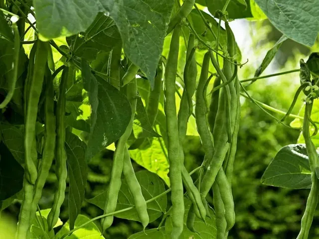

Fižol načrtujte šele za toplejši del sezone, ko mine nevarnost pozebe in se tla dovolj ogrejejo. Za majhen vrt ali posodo je praktičen nizek grmičast fižol, visoke sorte pa potrebujejo bistveno več prostora in trdno oporo. Že pri izbiri semena ločite stročji fižol od tistega za suho zrnje. Tako boste vedeli, kakšen pridelek pričakovati in v kateri fazi ga pobrati.
Setev v dovolj ogreto zemljo
Sejte neposredno v končno gredo ali posodo po nevarnosti pozebe. Prehitra setev v hladno, mokro zemljo lahko propade. Datuma zato ne izberite samo po koledarju.
Okvirna globina setve je 3–5 cm. Za nizek fižol načrtovalnik navaja približno 8–10 cm v vrsti in 40–50 cm med vrstami; dokončni razmik preverite pri sorti.
Nizki fižol v posodi
Za manjši posevek dveh do treh nizkih rastlin načrtovalnik predvideva najmanj 15 l in 30 cm globine zemlje. Več prostora izboljša razmere za korenine, zato rastlin ne dodajajte brez omejitve.
Izberite sonce ter posodo z odtokom. Med cvetenjem in tvorbo strokov še posebej pazite na enakomerno vlago. Visokega fižola ne obravnavajte kot preprosto zamenjavo za nizkega: zahteva drugačno oporo in prostor.
Stročji fižol ali suho zrnje
Stročji fižol pobirajte mlad in nežno razvit, še preden postanejo stroki izrazito vlaknasti. Redno pregledujte tudi skrite stroke. Okvir osmih do dvanajstih tednov velja le orientacijsko.
Za suho zrnje je potrebno daljše zorenje in ustrezno sušenje. Fižola ne jejte surovega; pripravite ga z ustrezno toplotno obdelavo. Plesnivega ali poškodovanega zrnja ne shranjujte skupaj z zdravim.
Informativni vodnik za osrednjo Slovenijo. Termine, velikost posode in razmike prilagodite sorti, vremenu in navodilom dobavitelja. Podatki niso napoved dejanskega datuma pobiranja.
Pogosta vprašanja
Je visoki fižol primeren za vsak balkon?
Ne. Potrebuje visoko in varno oporo, več prostora ter primerno zaščito pred vetrom. Za manjši začetniški načrt je preprostejša nizka sorta.
Ali lahko fižol sadim že marca?
Na prostem je to v večini hladnejših leg prezgodaj. Počakajte na dovolj ogreta tla in konec nevarnosti pozebe.